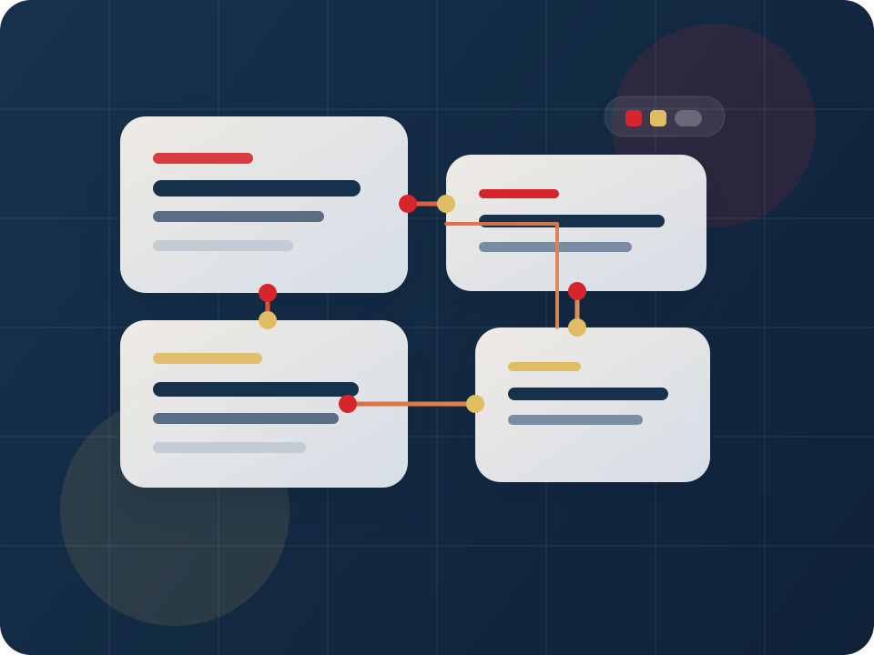

Una propuesta clara evita que la primera visita se desperdicie.
Estudio de estrategia, diseño y desarrollo web
Presencia digital clara para negocios que necesitan verse tan serios como trabajan.
Ayudamos a ordenar el mensaje, la interfaz y la estructura de sitios web para pymes, estudios y servicios profesionales que ya crecieron más allá de la improvisación.
- Propuesta de valor más clara desde la primera pantalla.
- Arquitectura y diseño pensados para generar confianza.
- Entregables ordenados y listos para seguir creciendo.
Sistema de trabajo
Diagnóstico, estructura, diseño y entrega con criterio.

Contenido principal primero, decisiones secundarias después.
El siguiente paso se ve fácil, concreto y creíble.
Ordenamos la propuesta para que el sitio explique mejor el valor del negocio.
La interfaz responde a prioridades reales, no solo a una maqueta bonita.
El sitio queda listo para publicarse, iterarse y crecer con más orden.
Valor
Una web más clara no solo se ve mejor: también explica mejor tu negocio.
Nodo Web combina estrategia, diseño e implementación básica para que el sitio deje de ser una pieza aislada y se convierta en una herramienta de comunicación confiable.
Propuesta de valor entendible
Tu sitio parte diciendo lo importante: qué haces, para quién trabajas y por qué tu servicio merece atención.
Interfaz con criterio profesional
Cada bloque, cada CTA y cada espacio responden a una jerarquía visible y no a decisiones aleatorias.
Base lista para seguir creciendo
El resultado queda preparado para iterar contenido, ampliar secciones y sostener una presencia digital más seria.
Servicios
Un servicio web claro necesita estrategia, lenguaje visual y una estructura bien resuelta.
01
Estrategia y estructura
Arquitectura para ordenar el mensaje
Revisamos la propuesta comercial, organizamos prioridades y definimos un recorrido simple para que la interfaz sostenga mejor la conversación.
- Mapa de contenidos y prioridades
- Jerarquía de mensajes y secciones
- CTA alineado con el objetivo del negocio
02
Diseño de interfaz
Landing pages y sitios con presencia profesional
Diseñamos interfaces sobrias, responsivas y listas para comunicar valor sin parecer una solución improvisada o una plantilla genérica.
- Sistema visual consistente
- Diseño mobile-first y responsive
- Componentes y bloques con lectura rápida
03
Implementación inicial
Entrega limpia, simple y lista para publicar
Construimos una base estática ordenada, fácil de mantener y preparada para evolucionar con nuevos contenidos o integraciones más adelante.
- HTML semántico y estructura clara
- CSS con sistema visual reutilizable
- Entrega lista para revisión y publicación
Proceso
Un sitio serio no se arma al azar. Se construye con una secuencia visible.
El trabajo avanza por etapas cortas, claras y verificables para reducir fricción y mantener el foco en lo que realmente importa.
Diagnóstico
Leemos el negocio, el público y la necesidad principal antes de mover una sola pantalla.
Estructura
Definimos jerarquía, secciones, CTA y un recorrido que sostenga la conversación.
Diseño
Construimos una interfaz sobria, clara y adaptable a móvil, tablet y escritorio.
Entrega
Publicamos una base ordenada, lista para revisión, validación y siguientes iteraciones.
Contacto
Si tu presencia digital ya no puede depender de soluciones improvisadas, conversemos.
La primera conversación sirve para revisar el punto actual del negocio, identificar el problema principal y definir un siguiente paso claro.
Enfoque consultivo
Primero entendemos el escenario. Después proponemos una estructura realista.
Decisiones visibles
Mensaje, interfaz y entrega responden a un criterio claro, no a ocurrencias.